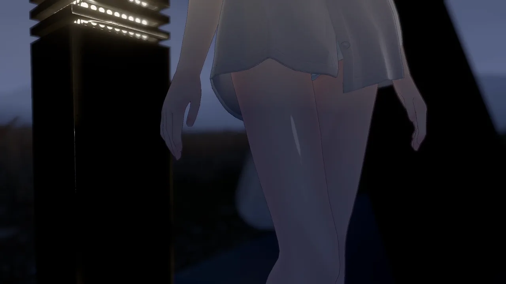
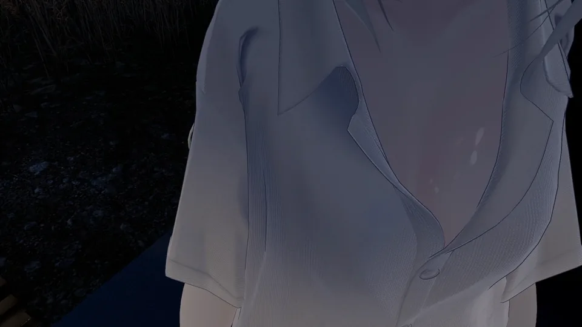

ツヤ肌マスク2種
「控えめ（soft）」と「しっかり（strong）」の2バリエーション。同じ差し替え作業で、照りの入り方を選べます。
凪 -Nagi- のツヤ肌マスク
しっとり照る肌に。アバター付属のMatCapマスクを差し替えるだけで、夜の灯りや逆光を拾って脚や肩、鎖骨がつやりと光ります。

主役はマスク画像です。スライダーは「その場で加減を変えたい人向けのおまけ」なので、使わずマスクの差し替えだけでも成立します。

「控えめ（soft）」と「しっかり（strong）」の2バリエーション。同じ差し替え作業で、照りの入り方を選べます。
凪に付属のマスクより描き込みが細かく、照りの境目がなめらかに出ます。
lilToonの「MatCap」の「マスク」の欄に画像を入れるだけです。改変の知識は要りません。lilToonは凪に付属のマテリアルで使われているシェーダーなので、追加の導入も不要です。
VRChatのメニューにラジアルスライダーが増え、ツヤの強さを0〜100%でその場で変えられます。設定した値は保存され、次回ログイン後もそのまま使えます。あくまでおまけの機能です。
4ステップで導入できます。改変の知識は要りません。
Unityのプロジェクトに、本商品のunitypackageをインポートします。
凪のbodyマテリアルを複製し、複製した方をbodyメッシュに割り当てます。
付属マテリアルを直接編集すると、アバターの更新時に設定が消えるためです。
複製したマテリアルのlilToonの設定画面で「MatCap」を開き、「マスク」の欄に本商品のマスク画像を設定します。
soft と strong を入れ替えて見比べ、好みの方を選んでください。
同梱するマスクと、おまけギミックの仕様です。各グループをクリックすると展開します。
| 名前 | 印象 | 想定用途 |
|---|---|---|
| soft | 控えめ | 普段は控えめにしておきたいとき |
| strong | しっかり | 撮影のときなど、ツヤを強めたいとき |
マスク画像は、凪の肌のUV配置に合わせて描いています。lilToonの「MatCap」の「マスク」の欄に設定して使います。
| 項目 | 内容 |
|---|---|
| パラメータ名 | GlossySkin |
| 型 | Float（同期あり・保存あり） |
| 既定値 | 0.6 |
| 操作方法 | VRChatのメニューのラジアルスライダー。ツヤの強さを0〜100%で変更できます |
| 消費する同期パラメータ | 8bit（Float 1つ分） |
| 必要な依存 | Modular Avatar（無料）が別途必要です |
| 対象パス | nagi_body |
おまけのスライダーは、bodyメッシュのオブジェクト名が初期状態（nagi_body）であることを前提にしています。改変で名前を変えたり階層を移動したりしている場合、エラーは出ませんが動作しません。
購入前に確認してください。
アバター本体、およびマテリアルは含まれません。マスク画像とおまけのギミックのみの商品です。
本商品は個人が制作した非公式の対応商品です。本商品についてのお問い合わせをrio3d様へ送ることはおやめください。
おまけのスライダーは、bodyメッシュのオブジェクト名が初期状態（nagi_body）であることを前提にしています。改変で名前を変えたり階層を移動したりしている場合、エラーは出ませんが動作しません。
おまけのスライダーは、アバターの同期パラメータを8bit（Float 1つ分）使用します。
おまけのスライダーの利用には、Modular Avatar（無料）が別途必要です。